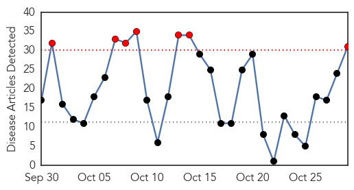
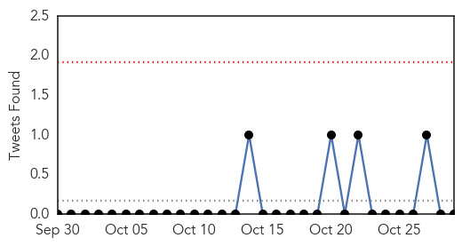
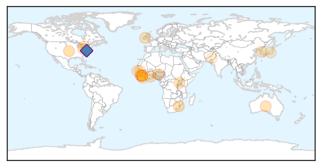
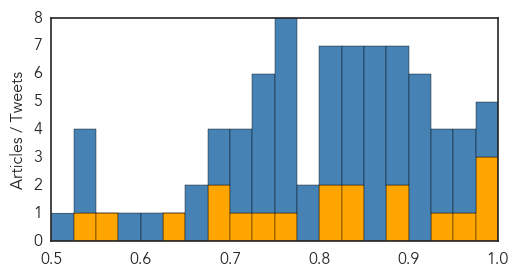

Influenza
30-Day Web Trend
7 alerts, 0 warnings

30-Day Twitter Trend
0 alerts, 0 warnings

Article Locations

Article Confidences

Top Articles:
- 1.000
- The truth about flu vaccines – The Westside Gazette
- 0.999
- Victims Crippled and Killed by the Flu Shot Compensated by U.S. Government
- 0.997
- STATE HEALTH OFFICIALS ANNOUNCE FIRST INDIANA INFLUENZA DEATH OF 2015-16 SEASON
- 0.995
- Flu vaccine effectiveness reduced by use of statins
- 0.991
- Flu shots make sense
- 0.989
- State Health Department: First flu death of season hits Indiana
- 0.987
- Studies raise questions about impact of statins on flu vaccination in seniors
- 0.985
- County hosts flu shot clinics
- 0.981
- Studies raise questions about impact of statins on flu vaccination in seniors
- 0.980
- Clinics are opening for flu season
- 0.977
- Why the CDC pushes flu season fear like clockwork: $1.6 billion in annual revenue for Big Pharma
- 0.975
- Statins could stop flu jab from working properly and put elderly at risk, scientists warn
- 0.973
- Flu season arrives; health professionals gearing up for rush
- 0.970
- Do statins reduce the effectiveness of flu jabs?
- 0.957
- Pregnant Nurse Fired For Refusing Toxic Flu Shot
- 0.945
- Influenza virus identified in European Union nations
- 0.934
- Statins may lessen impact of flu vaccination in elderly
- 0.927
- Statins could interfere with flu jab, studies suggest
- 0.925
- Flu vaccinations appear less effective for people taking statins
- 0.908
- Statins may reduce effectiveness of flu jab
- 0.848
- Today's stories from newspapers in Belleville Region
- 0.848
- Today's stories from newspapers in Caledon
- 0.800
- Today's stories from newspapers in Ottawa
- 0.785
- Today's stories from newspapers in Ottawa Valley
- 0.753
- Tuberculosis disease explodes in Australians’ favourite holiday spots, WHO report shows
- 0.751
- October 29, 2015 Archives
- 0.751
- October 29, 2015 Archives
- 0.751
- October 28, 2015 Archives
- 0.732
- Tuberculosis disease explodes in Australians’ favourite holiday spots, WHO report shows
- 0.689
- The vaccine industry's war on women
- 0.618
- Bad Science Watch: Sellers of Homeopathic Flu Remedies Spreading Lies and Misinformation
Top Tweets:
-
No tweets found for Oct 29, 2015
Ebola
30-Day Web Trend
4 alerts, 0 warnings

30-Day Twitter Trend
17 alerts, 0 warnings

Article Locations
Article Confidences
Top Articles:
- 0.998
- Study: Funerals Were Prime Places for Ebola Spread
- 0.998
- The Politics Behind The Ebola Crisis – Analysis
- 0.998
- ICG: The politics behind the Ebola crisis
- 0.962
- Guinea Records Three New Cases Of Ebola, Brings Total To Nine
- 0.937
- 67% of the people on Earth have this 'incurable' viral infection
- 0.899
- Like her father, Vanessa Kerry is reporting for duty. Her mission: Preventing the next outbreak.
- 0.880
- No good deed goes unpunished: After Ebola, Sierra Leone’s brave burial workers rejected, fear bleak future (PHOTOS)
- 0.847
- A fictional island, a cyclone and tough questions: how aid workers prepare for disaster
- 0.836
- Sierra Leone News: Guinea is a threat to Sierra Leone’s ebola freedom-CEO Palo Conteh « Awoko Newspaper
- 0.820
- Rare Psychological Support was Critical for Ebola Patients
- 0.805
- Ebola one year later
- 0.774
- US$1.7bn to Build Resilient Health System
- 0.734
- Cleveland Clinic unveils list of the 10 most important medical innovations for 2016
- 0.707
- Infectious Disease Cyber Detectives Keep Governments Accountable
- 0.686
- Why I cannot tell 'the African story'
- 0.681
- FG Mulls Regional Centre for Disease Control , Articles
- 0.632
- WHO gets it wrong again: As with SARS and H1N1, its processed-meat edict went too far
- 0.568
- LIBERIA: Dozens Of Orphans In West Point Receive Food And Clothing From More Than Me
- 0.537
- People already uses tablets as �a TV for every room in the house so Samsung built one worth watching
Top Tweets:
- 1.000
- ebola ebola virus symptoms treatment and prevention webmd - https://t.co/W8O3ayghKD ebola
- 0.999
- Virus Ebola: Medicago obtient un contrat du gouvernement canadien - https://t.co/F8XsyLehVZ ebola
- 0.999
- Key Messages - Ebola Virus Disease, West Africa - https://t.co/EtYnNR5tXa ebola
- 0.998
- Is ebola a lytic or lysogenic virus - https://t.co/7USlEcP2ry ebola
- 0.997
- Ebola cases - https://t.co/Gf4OHWrPDs ebola
- 0.995
- Ebola Warriorss - https://t.co/eeJH0QODxm ebola
- 0.995
- Ebola Naachii - https://t.co/WUAC74Cz4l ebola
- 0.993
- Deforestation 'may have started west Africa's Ebola outbreak' - https://t.co/M2oQjCNnJh ebola
- 0.990
- Penn Study Blocks Ebola Virus Budding by Regulating Calcium Signaling - https://t.co/bxnwVC3b1N ebola
- 0.987
- Guinea Agribusiness: Sector recovering after Ebola epidemic - https://t.co/j8gyDeGrb6 ebola
- 0.983
- No good deed goes unpunished: After Ebola, Sierra Leone's brave burial workers ... - Mail & Guardi... https://t.co/Vn30oqFJi2 ebola EVD
- 0.983
- America's Ebola Panic - https://t.co/mvmPk7wdJw ebola
- 0.982
- Guinea records new cases of Ebola - https://t.co/WylLNuC6h4 ebola
- 0.979
- Ebola patient is in isolation after Relapse - https://t.co/MBpFzsymMe ebola
- 0.979
- Ebola Lalala Song Mp3 - https://t.co/V47sKIY2h2 ebola
- 0.978
- YWCA Identifies With Ebola Widow, Widowers - https://t.co/ItAm9Aop3P ebola
- 0.978
- Dean to discuss world response to Ebola epidemic - https://t.co/To2b1Zy8Zq ebola
- 0.975
- MERS, Ebola, bird flu: Science's big missed opportunities - BusinessWorld Online Edition https://t.co/kgphMbOg90 ebola EVD
- 0.974
- 3 New Cases of Ebola Emerge in Guinea - https://t.co/It5bfXxOBh ebola
- 0.973
- No good deed goes unpunished: After Ebola, Sierra Leone's brave burial workers rejected, fear ... - https://t.co/epiIbG9wpg ebola
- 0.972
- Three new Ebola cases confirmed in Guinea - https://t.co/bt9yzRF0jT ebola
- 0.972
- Liberia: Gender Ministry Supporting 4000 Ebola Orphans - https://t.co/JaGy2bTmWr ebola
- 0.970
- Is Ebola Making a Comeback? - https://t.co/ZS1OGJuwS1 ebola
- 0.969
- Aethlon Medical's (NasdaqCM:AEMD) Biofiltration Platform Tackles Everything from Ebola to ... - https://t.co/U36mpK4wpr ebola
- 0.966
- Rare Psychological Support was Critical for Ebola Patients - https://t.co/eW8XWoODcd ebola
- 0.966
- Deforestation 'may have started west Africa's Ebola outbreak' - The Guardian https://t.co/47b4UMGcAk ebola EVD
- 0.965
- Ebola nurse is awarded medal for West Africa work - https://t.co/jhVCdlTGEp ebola
- 0.960
- Ebola volunteers needed - New Vision https://t.co/gi8MB2YksO ebola EVD
- 0.959
- Three new cases of Ebola recorded in Guinea - https://t.co/cqEZKnL3dC ebola
- 0.957
- Guinea records 3 new cases of Ebola, brings total to 9 - https://t.co/18hFwnwexk ebola
- 0.955
- Press Statement of the 553rd PSC meeting on Ebola and post-Ebola recovery efforts in the most ... - https://t.co/AcGXGw24z3 ebola
- 0.955
- Ebola one year later - https://t.co/NLIr1JgUCV ebola
- 0.954
- South reassures Bio of zero Ebola - https://t.co/qNCovnoA6v ebola
- 0.948
- A Conversation With - Abu Kamara, Ebola Active Case Finder - https://t.co/6GauAanJ0c ebola
- 0.945
- Working in an Ebola Protection Suit - https://t.co/nW6zbij6t0 ebola
- 0.944
- 3 New Cases of Ebola Emerge in Guinea | 9 in Total Infected - https://t.co/NUOh4BY6QO ebola
- 0.939
- Man tested for Ebola in La Coruña - https://t.co/LYkM04EY9k ebola
- 0.936
- Ebola: Expert tasks Nigerians on hygiene - https://t.co/s9qAr10iHF ebola
- 0.933
- Watchdog Says Army Ebola Contract Needs More Oversight - https://t.co/33CuKg1Jb2 ebola
- 0.933
- Guinea records three new cases of Ebola, brings total to nine - Reuters https://t.co/fa2YjU9lrD ebola EVD
- 0.931
- Beyond Ebola and Polio - https://t.co/iIomen7rAF ebola
- 0.926
- Guinea records three new cases of Ebola, brings total to nine - https://t.co/nUyLKkTJwl ebola
- 0.926
- Guinea records three new cases of Ebola, brings total to nine - https://t.co/AgSF4K6OFw ebola
- 0.912
- Study: Funerals Were Prime Places for Ebola Spread - MedPage Today https://t.co/TImAGbporO ebola EVD
- 0.909
- Study: Funerals Were Prime Places for Ebola Spread - https://t.co/bd2aui4GSr ebola
- 0.903
- Aethlon Medicals Biofiltration Platform Tackles Everything from Ebola to Cancer - https://t.co/6tbI3bHQSR ebola
- 0.897
- Aethlon Medical's Biofiltration Platform Tackles Everything from Ebola to Cancer: CEO James Joyce - https://t.co/8cUZP15zUE ebola
- 0.893
- The Politics Behind The Ebola Crisis – Analysis - https://t.co/inIW1Kg3W3 ebola
- 0.893
- Ebola Medal awarded to Weston-super-Mare nurse awarded for service in West Africa - https://t.co/UzvD6GUcWM ebola
- 0.884
- Three new Ebola cases recorded in Guinea - https://t.co/WVkbuVW1Ub ebola
Showing top 50 tweets...